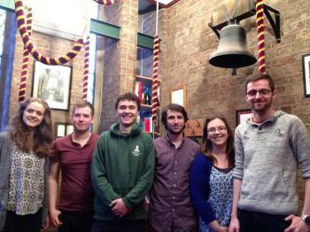
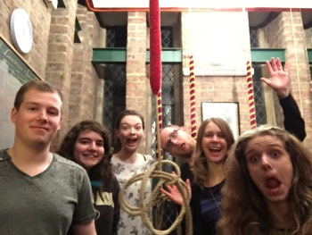

Peals and Quarters
2015/16
Monday, 8 August 2016
1272 Cambridge Surprise Minor
532 Norwich Road (The Vestey Ring), Ipswich, Suffolk (8 lbs 5 oz in B) in 33m
- Claire L Pearson
- Charlotte Alford
- Eric W S Wolever
- Claire E Reading
- Lucy B J Williamson
- Nathan C Cox (C)
First on a mini ring: 1 (also longest stint on mini ring without accidentally ringing down!)
First in pyjamas for all.
With thanks to Billy Brooke for his background entertainment.
P.S. It works better when you're sober :P
A well earned post quarter nap
Saturday, 6 August 2016
1272 York Surprise Minor
532 Norwich Road (The Vestey Ring), Ipswich, Suffolk (8 lbs 5 oz in B) in 33m
- William L K Brooke
- Nathan C Cox
- Ryan Mills
- Claire E Reading
- Lucy B J Williamson
- Eric W S Wolever (C)
First on a mini ring: 1, 2, 3, 4
First outside for all
First in method: 4, 5, 6
75th Quarter Peal, 5th as conductor and first conducting surprise : 6
Fidget the Dog would like to be associated with this quarter for joining us on vocals on attempt
number one and having to be shut inside for the rest of the duration!
Rung to mark our love of York, without which we would never all have met and to celebrate a much
needed reunion weekend in Ipswich :) With many many thanks to Jonathan and Susan Williamson for
their help and hospitality.
The Band Clockwise....and Fidget :-P
Wednesday, 15 June 2016
1280 Spliced Minor
York Colleges Guild Alliance Minor and Little Bob Minor
St Lawrence, York, North Yorkshire (7-3-24 in A) in 41m
- Claire Pearson
- Charlotte Alford
- Lucy Williamson
- Claire Reading
- Eric Wolever
- Nathan Cox (C)
The serious bit...
First in method by all.
First of spliced minor: 3,4,6.
First spliced: 2.
With many thanks to David Hull, Don Morrison, Derek Jones and James Hibbert for their assistance
with the composition.
The funny bit...
Least appropriately dressed and first in a skirt: 1.
Rung for the first wearing of her new shoes: 4.
The band would like to associate William L K Brooke with this quarter peal who listened diligently
to the whole thing from the church yard :)
Rung to celebrate the end of term and to prove to Ryan Mills that we can do cool stuff without him
The Band L-R
Tuesday, 7 June 2016
1260 Plain Bob Doubles
St Lawrence, York, North Yorkshire (7-3-24 in A) in 46m
- Sam Turner
- William Brooke (C)
- Charlotte Alford (C)
- Claire Reading (C)
- Lucy Williamson (C)
- Stephen Webb
First quarter peal away from cover - 1
First as joint conductor - 2
Friday, 3 June 2016
5152 Yorkshire Surprise Major
St Lawrence, York, North Yorkshire (7-3-24 in A) in 2h 56m
- Peter D Hughes (Superfan)
- Claire E Reading (Langwith)
- William L K Brooke (Halifax)
- Lucy Williamson (Alcuin)
- Claire L Pearson (Alcuin)
- Nathan C Cox (St John)
- Ryan Mills (Halifax) (C)
- Eric W S Wolever (Wentworth)
Rung in anticipation of the 46th annual York Colleges Guild Dinner.
With many thanks to YCG superfan Peter Hughes for replacing Kevin Atkinson's
right hand at the last minute!
First surprise: 2
First surprise inside: 4
Saturday, 28 May 2016
1260 Plain Bob Doubles
St Lawrence, York, North Yorkshire (7-3-24 in A) in 46m
- Ben Williamson
- Lucy Williamson
- William Brooke
- Claire Pearson
- Eric Wolever (C)
- Samuel Turner
1: First on the Treble
6: First Quarter Peal
1 & 2: First together without the Parents :P
The Band L-R
Saturday, 16 April 2016
1260 Plain Bob Doubles
St Lawrence, York, North Yorkshire (7-3-24 in A) in 46m
- Claire Reading
- Nathan Cox
- William L K Brooke (C)
- Eric Wolever
- Lucy Williamson
- Stephen Webb
First Quarter 6, First as conductor 3, First without a stay 5.
Band left to right.
Wednesday, 20 January 2016
1260 Plain Bob Doubles
St Lawrence, York, North Yorkshire (7-3-24 in A) in 46m
- Caitlin Turpin
- Nathan Cox (C)
- Claire Pearson
- Claire Reading
- Sarah McTiernan
- Benedikt Lehmann
Rang in premature celebration of the treble ringer's birthday, and to celebrate Wednesday!
Band L-R 2,1,3,6,5,4
Saturday, 21 November 2015
1344 Spliced Surprise Major
192 Cambridge, 192 Yorkshire, 192 Lincolnshire, 768 Superlative
St Lawrence, York, North Yorkshire (7-3-24 in A) in 4m
- Lydia Mayfield
- Claire Reading
- Lucy Williamson
- William L K Brooke
- Sarah McTiernan
- Claire L Pearson
- Eric Wolever
- Ryan Mills (C)
First Spliced: 6
First Spliced Surprise:
First Spliced Surprise Major: 7
Most methods spliced: 2
200th Quarter: 8
The Band - I TOLD YOU WE COULD DO IT!!
Monday, 2 November 2015
1260 Plain Bob Triples
St Lawrence, York, North Yorkshire (7-3-24 in A) in 46m
- Claire L Pearson
- Claire Reading
- Sarah McTiernan
- William L K Brooke
- Lucy Williamson
- Charlotte Elkington
- Nathan Cox (C)
- Benedikt Lehmann
Rung to celebrate the 20th Birthday of Claire Reading (2), and prior to the solemn requiem mass for the feast of All Souls.
First Quarter: 8
Saturday, 24 October 2015
1260 Plain Bob Triples
St Lawrence, York, North Yorkshire (7-3-24 in A) in 41m
- Claire L Pearson
- Susan J Williamson
- Charlotte Alford
- Lucy Williamson (C)
- Jonathan Williamson
- Claire Reading
4: First as conductor
6: First as tenor behind
The band left to right